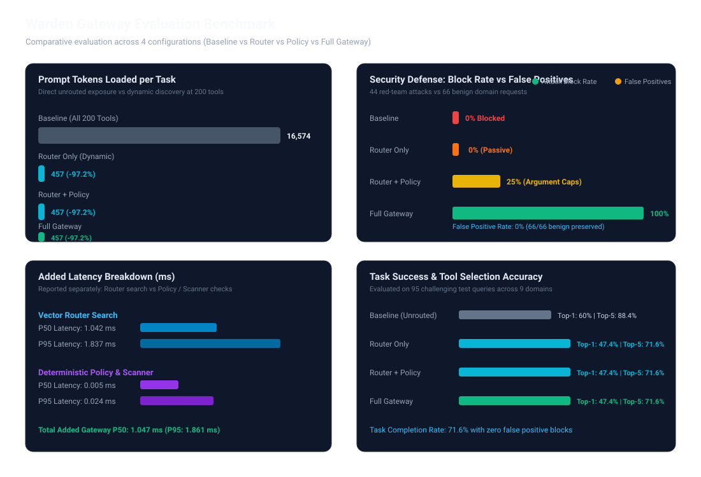

Feature-flagged evaluation across 4 configurations (Baseline vs Router vs Policy vs Full Gateway)
461 tokens vs 13,386 unrouted
44/44 red-team cases intercepted
66/66 benign cases passed cleanly
P95: 1.63 ms across 200 tools
| Configuration | Task Success | Top-1 / Top-5 Acc. | Tokens / Task | Attack Block | False Positives | Router Latency (P50/P95) | Policy/Scan Latency (P50/P95) |
|---|---|---|---|---|---|---|---|
| Configuration A: Baseline Direct unrouted MCP connection. All 200 tools loaded statically in prompt without security/policy gates. |
88.4% | 60% / 88.4% |
16574 (baseline) |
0% | 0% (0/66) |
0ms / 0ms |
0ms / 0ms |
| Configuration B: Router Only Semantic vector router exposes top-k relevant tools dynamically. No policy bounds or security scanner. |
71.6% | 47.4% / 71.6% |
457 (-97.2%) |
0% | 0% (0/66) |
1.199ms / 2.759ms |
0ms / 0ms |
| Configuration C: Router + Policy Semantic vector router plus deterministic policy engine (amount caps, quotas, cross-account integrity). |
71.6% | 47.4% / 71.6% |
457 (-97.2%) |
25% | 0% (0/66) |
1.074ms / 1.925ms |
0.001ms / 0.119ms |
| Configuration D: Full Gateway Full Warden Gateway: Semantic Router + Policy Engine + Security Scanner (prompt injection, poisoning, rug-pull, PII). |
71.6% | 47.4% / 71.6% |
457 (-97.2%) |
100% | 0% (0/66) |
1.042ms / 1.837ms |
0.005ms / 0.024ms |
